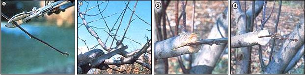

[1] Take your cuttings from below a healthy bud. [2] Cut the ""host"" limb off square to form a clean ""stump"". [3] Split the host stump with a chisel, and wedge it open to make a scion implant. [4] Then coat all cut surfaces with grafting wax to complete the job!